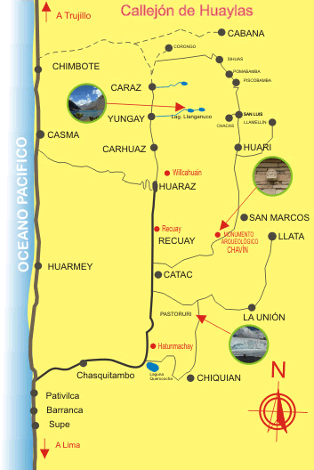

El Callejón de Huaylas es un paraíso en la tierra, un premio de Dios a la amabilidad y generosidad de su gente, es sin dudas cuna de la agricultura Americana (cueva de Guitarreros 12,500 a.C), y se encuentra aproximadamente a 408 km al noreste de Lima, en la Región Ancash. Tiene unos 180 kilómetros de longitud, desde la laguna de Conococha (4,000 m.s.n.m) hasta el Cañón del pato.
A lo largo de este valle existen numerosas ciudades con características propias, que se alinean de la siguiente manera (de sur a norte): Cátac (3,500 m), Recuay (3,400 m), Huaraz (3,090 m), Carhuaz (2,650 m), Yungay (2,500 m) y Huaylas (capital Caraz (2,290 m), atravesando de esta manera 39 túneles por el impresionante "Cañón del Pato", donde finalmente se arriba a la localidad de Huallanca. Dentro de estas ciudades Huaraz es, la ciudad más importante, es la capital de la Región Áncash, el centro de comercio regional y eje del movimiento turístico, especialmente de los deportes de aventura (Turismo de Aventura). Esta zona es la predilecta de escaladores, caminantes, cientificos y amantes de la paz.
Es un valle interandino de incomparable belleza, emplazado entre las Cordilleras Blanca y Negra, y recorrido por el rio Santa con dirección de sur a norte, cuyo caudal se regula con los deshielos de los glaciares de la Cordillera Blanca.
El Callejón de Huaylas tiene el privilegio de albergar todos los paisajes del mundo, pues constituye una de las más variadas atracciones turísticas del Perú, ofreciéndole al turista, un amplio matiz de atractivos, desde sus milenarias reliquias de civilizaciones pasadas (Willcawain, Honqopampa, Tumshucaico, etc.), majestuosos nevados de nieve perpetua y de alegres pueblos andinos con gente generosa, deseosa de mostrarte su variado folklore, lleno de leyenda e historia que se pierde en el origen de sus antiguos pobladores; los "Huaylas y Konchucos". |
Cuenta con 22 fuentes termales, entre las principales destacan Las Aguas Termales de Chancos (30 km de Huaraz), sus aguas llegan hasta los 68°C y 72°C, y Los Baños Termales de Monterrey (7 km de Huaraz), importante centro termo medicinal, dotada con adecuada infraestructura; con piscina y pozas individuales y familiares. Sus aguas llegan hasta los 49°C, ideal para tratamiento de diversas enfermedades tales como nerviosismo crónico, parálisis, reumatismo, etc.
A lo largo de Callejón de Huaylas existen también numerosas lagunas de aguas color turquesa, cascadas de aguas claras y cristalinas y quebradas profundas, formando parte del encanto que ofrece este hermoso valle a los turistas.
Existen tours y visitas diarias al Callejón de Huaylas, a través del tour que pasa hacia las Lagunas de Llanganuco. El punto de partida para el viaje es la ciudad de Huaraz. |